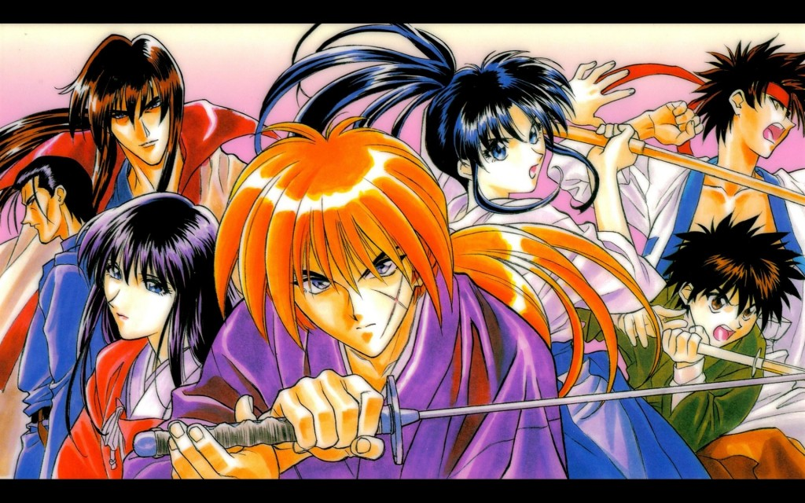

El anime fue dirigido por Kazuhiro Furuhashi y fue emitido desde el 10 de enero de 1996 hasta el 8 de septiembre de 1998 por Fuji Television en Japón.11 Fue producido por SPE Visual Work Inc. y la Fuji TV y fue animado del episodio 1 al 66 por Studio Gallop, mientras que del episodio 66 en adelante fue animado por Studio DEEN.11 Los primeros 62 episodios abarcan los primeros 18 volúmenes del manga, mientras que el resto son episodios de relleno que no aparecen en el manga. Durante ese período, el Arco Jinchu todavía estaba siendo escrito y aún estaba incompleta al final de los rellenos del anime. El episodio final, el 95, no fue emitido en Japón, sino que fue un episodio especial lanzado para VHS y DVD.12
La emisión de la serie fue autorizada más tarde en Norteamérica y publicada en DVD por Media Blasters. Comenzó a emitirse en Estados Unidos en la Cartoon Network como parte del bloque Toonami, el 17 de marzo de 2003, pero se terminó en el final de la segunda temporada.13 Los episodios 63 al 95 no se emitieron pero fueron incluidos en la edición de DVD.14
En América Latina, la serie fue licenciada por Columbia TriStar Television15 y doblada en Colombia bajo una versión en inglés titulada Samurai X,16 en la empresa Centauro Comunicaciones en dos tandas: la primera tanda fue de los 62 capítulos iniciales y se realizó en 1997. La segunda tanda abarcó hasta el episodio 94, y se hizo en 1999. El último episodio (95) nunca fue doblado debido a que en Japón solo salió a la venta en video. Siendo estrenada panregionalmente (con cortes en su metraje)16 por Cartoon Network en septiembre de 2001.15 La versión colombiana tiene la particularidad de ser el primer doblaje occidental de la serie.16 El 29 de septiembre de 2008 fue reestrenada por Animax, esta vez sin cortes al metraje, pero con episodios en desorden.1718 El 17 de enero de 2016 se anunció que Netflix Latin America incorporaría a su catálogo a Rurouni Kenshin.19 Los primeros 27 episodios de la serie finalmente fueron añadidos al catálogo el 1 de febrero,20 notablemente careciendo del doblaje colombiano; solo teniendo la versión original japonesa y el doblaje americano y subtítulos al español, español ibérico e inglés.21 Una segunda tanda de episodios, consistente en las temporadas 2 y 3 (según la denominación de Media Blasters), fue añadida el 15 de abril del mismo año.22
Una segunda adaptación de la serie de televisión de anime de Liden Films se anunció en el evento Jump Festa '22 el 19 de diciembre de 2021.23 La serie está dirigida por Hideyo Yamamoto, con guiones escritos por Hideyuki Kurata, diseños de personajes por Terumi Nishii y música compuesta por Yū Takami. Se estrenará en 2023 en el bloque de programación Noitamina de Fuji TV.24
VOLVER